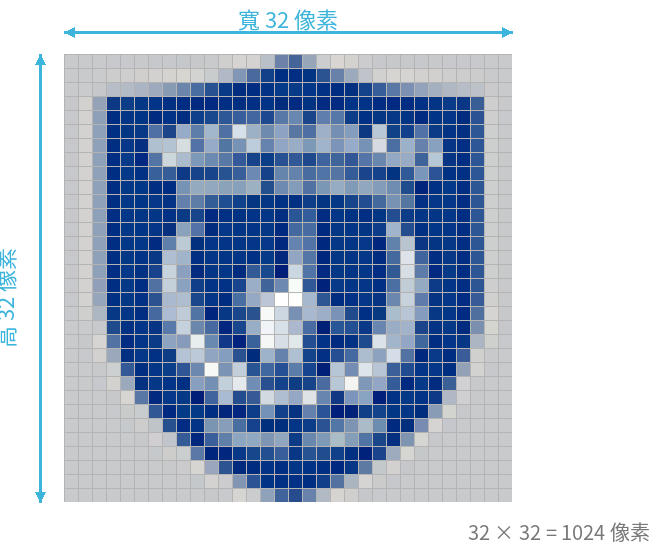

資料運算與儲存
邏輯閘、加法器、資料單位與訊號傳輸
🎯 學習目標
- 理解 AND / OR / XOR / NOT 邏輯運算與真值表
- 認識半加器與全加器的運作
- 熟悉資料儲存單位與圖像、音檔容量的計算
- 分辨類比訊號與數位訊號，了解資料傳輸方式
01邏輯運算與邏輯閘
邏輯閘是數位電路中最基本的元件，用來實現邏輯運算。
邏輯閘聽起來很抽象，其實可以先想成電燈開關：通（1）＝ 電流過得去、斷（0）＝ 過不去。把開關接的方式換一換，就得到不同的邏輯閘——
串聯 ＝ AND
兩個開關「串聯」（一個接一個）：A、B 都通(1)，燈才亮。只要有一個沒通就滅 → 這就是 AND。
並聯 ＝ OR
兩個開關「並聯」（各走各的）：只要有一個通(1)，燈就亮 → 這就是 OR。
反相 ＝ NOT
把訊號「反過來」：進 1 出 0、進 0 出 1 → 這就是 NOT（反閘）。
有了這個「開關」的直覺，下面再看正式的符號和真值表就會清楚很多 👇
以下是四種基本邏輯閘的符號與真值表：
AND（及閘，邏輯「與」）
兩個輸入都是 1 時輸出才是 1。
| A | B | A AND B |
|---|---|---|
| 0 | 0 | 0 |
| 0 | 1 | 0 |
| 1 | 0 | 0 |
| 1 | 1 | 1 |
OR（或閘，邏輯「或」）
只要有一個輸入是 1 就輸出 1。
| A | B | A OR B |
|---|---|---|
| 0 | 0 | 0 |
| 0 | 1 | 1 |
| 1 | 0 | 1 |
| 1 | 1 | 1 |
XOR（互斥或閘）
兩個輸入不同時輸出 1，相同時輸出 0。
| A | B | A XOR B |
|---|---|---|
| 0 | 0 | 0 |
| 0 | 1 | 1 |
| 1 | 0 | 1 |
| 1 | 1 | 0 |
NOT（反相器 / 反閘，邏輯「非」）
把輸入反過來：0 變 1、1 變 0。
| A | NOT A |
|---|---|
| 0 | 1 |
| 1 | 0 |
02加法器
加法器是執行加法運算的數位電路，是 CPU 中算術邏輯單元（ALU）的基礎。
半加器 Half Adder
兩個輸入 A、B，輸出和 S 與進位 C。（S＝A XOR B，C＝A AND B）
| A | B | C | S |
|---|---|---|---|
| 0 | 0 | 0 | 0 |
| 0 | 1 | 0 | 1 |
| 1 | 0 | 0 | 1 |
| 1 | 1 | 1 | 0 |
全加器 Full Adder
多了一個進位輸入 Cin，可串接處理多位元加法。
| A | B | Cin | Cout | S |
|---|---|---|---|---|
| 0 | 0 | 0 | 0 | 0 |
| 0 | 0 | 1 | 0 | 1 |
| 0 | 1 | 0 | 0 | 1 |
| 0 | 1 | 1 | 1 | 0 |
| 1 | 0 | 0 | 0 | 1 |
| 1 | 0 | 1 | 1 | 0 |
| 1 | 1 | 0 | 1 | 0 |
| 1 | 1 | 1 | 1 | 1 |
03資料儲存的單位
電腦中最基本的儲存單位是位元 (bit)，只能存 0 或 1；最小的資料儲存單位是位元組 (Byte)。
1 個位元組可以用來儲存 1 個英文字母、數字或特殊符號（ASCII 編碼）。
| 單位 | 換算 |
|---|---|
| 1 KB | = 1024 Byte |
| 1 MB | = 1024 KB |
| 1 GB | = 1024 MB |
| 1 TB | = 1024 GB |
| 單位 | 換算 |
|---|---|
| 1 PB | = 1024 TB |
| 1 EB | = 1024 PB |
| 1 ZB | = 1024 EB |
| 1 YB | = 1024 ZB |
04圖像與音檔容量計算
🖼️ 圖像檔案大小
數位圖像其實是由一格一格的像素（點）組成的。放大來看就像下面這張明道校徽——每一格都是一個像素：

圖像儲存空間
＝ 圖像高(點) × 圖像寬(點) × 像素深度(位元組)
像素深度看色彩模式——顏色越多，每個像素要用越多位元來記錄。
| 色彩模式 | 可表示的顏色數 | 每個像素需要 |
|---|---|---|
| 單色 | 2 色（黑／白） | 1 bit |
| 16 色 | 2⁴ ＝ 16 色 | 4 bit |
| 256 色 | 2⁸ ＝ 256 色 | 8 bit（＝ 1 Byte） |
| 全彩 True Color | 2²⁴ ≈ 1677 萬色 | 24 bit（＝ 3 Byte，RGB 各 8 bit） |
例：寬 10 公分、高 8 公分、解析度 28 點/公分、全彩儲存
高(點) = 8 × 28 = 224
寬(點) = 10 × 28 = 280
所需空間 = 224 × 280 × (24 / 8)
= 224 × 280 × 3
= 188160 bytes🎵 音檔大小
聲音是連續的類比波形，電腦要每隔固定時間「取樣」一次，把振幅記成數字，才能變成數位音檔：
資料量 = 取樣頻率 × 取樣位數 × 聲道數 × 時間 ÷ 8
例：5 分鐘、雙聲道、16 位取樣、44.1 kHz、不壓縮
= 44100 × 16 × 2 × (5×60) ÷ 8 ÷ 1024 ÷ 1024
≈ 50.47 MB05類比訊號 vs 數位訊號
🌊 類比訊號
連續值，大自然的訊號都屬於類比（聲音、光、溫度、壓力）。缺點：容易被雜訊影響而失真，長距離傳輸或多次複製尤其明顯。
💠 數位訊號
不連續值，以二進位 0/1 表示（0＝低電位、1＝高電位）。優點：容易處理——儲存、傳輸、壓縮、加密、偵錯都方便。
06資料傳輸方式
依傳輸方向分類
基頻與寬頻、交換方式
- 基頻 (baseband)：以數位方式直接傳送，一次傳送一個訊號、佔用整個媒介（例如區域網路 LAN）。
- 寬頻 (broadband)：以類比載波調變、分頻多工，可同時傳送多個訊號／頻道（例如有線電視 Cable）。
上面是教科書/考試的定義（寬頻＝類比多工）。但日常說的「寬頻上網」（光纖、ADSL、第四台網路）是指「高速的網路存取服務」，本身其實是數位傳輸——這是口語用法，著重「速度快」，和學術上「寬頻＝類比」的意義不同，兩者不要混為一談。
電路交換建立專用實體線路（速度快、錯誤率低，但不共用頻寬）；訊息交換先儲存再轉送、可選路徑（線路使用率高，但大量資料時易壅塞）。
計算網路速度：下載檔案要多久？
網路速率的單位是 bps（每秒位元數），檔案大小的單位是 Byte（位元組），換算時別忘了 1 Byte = 8 bits。
基本例：網路速率 2 Mbps，傳送 150 MB 檔案需多久？
150 MB = 150 × 1024 × 1024 × 8 bits = 1,258,291,200 bits
時間 = 1,258,291,200 ÷ 2,000,000 ≈ 629 秒 ≈ 10.5 分鐘換個生活情境：假設你家是中華電信 100M 光纖（下載 100 Mbps），要下載《俠盜獵車手 6》（GTA 6，假設檔案 150 GB），理想狀況下要多久？
生活例：中華電信 100M（100 Mbps）下載 GTA 6（150 GB）
檔案大小 = 150 GB
= 150 × 1024 × 1024 × 1024 Bytes
= 150 × 1024 × 1024 × 1024 × 8 bits
≈ 1,288,490,188,800 bits
下載速率 = 100 Mbps = 100 × 1,000,000 = 100,000,000 bps
時間 = 1,288,490,188,800 ÷ 100,000,000
≈ 12,885 秒
≈ 214.7 分鐘
≈ 約 3.6 小時
※ 這是「理論最快」值。實際上還會受到伺服器速度、
線路壅塞、Wi-Fi 訊號等影響，通常會更久。其實「1 GB」有兩種算法，這就是混亂的來源：
- 二進位（每級 ×1024）：1 GB＝1024 MB＝1024×1024 KB…，正式名稱其實叫 GiB（Gibibyte）。電腦內部、Windows、Steam 都用這種算。
- 十進位（每級 ×1000）：1 GB＝1000 MB…，硬碟廠商、網路速率、蘋果 macOS 用的是這種。
麻煩的是：大家畫面上都寫「GB」，但有人心裡是 1024、有人是 1000，數字自然對不起來。三個最常見的例子：
- Windows／Steam ＶＳ macOS：Windows 和 Steam 骨子裡用 1024（其實是 GiB）算容量，畫面卻寫「GB」；蘋果 macOS 從 2009 年起改成「畫面寫 GB 就是真的 1000」。所以同一個檔案，在 Windows 和 Mac 上顯示的數字會不一樣。
- 買硬碟／隨身碟：包裝寫「1 TB＝1000 GB」（廠商用 1000），插上 Windows 後系統改用 1024 去算、單位又還是寫「GB」，於是 1,000,000,000,000 Bytes 就變成畫面上看到的 931 GB。硬碟沒有縮水，只是換算基準不同。
- 雲端服務（Google Cloud、AWS、Azure）：規格書裡 GB（1000）和 GiB（1024）常常混用——記憶體用 GiB 算、網路流量或硬碟空間又用 GB，工程師估容量和費用時很容易搞錯。
一句話記住：看到 GB，先想一下「這是 1024 的、還是 1000 的？」——電腦內部／Windows／Steam 多半是 1024（其實是 GiB）；硬碟包裝／網速／雲端流量多半是 1000。
✏️ 課堂練習
- 先自己對照上面的邏輯閘符號與真值表，寫出 A=1, B=0 時 XOR 與 NAND 的輸出各是多少；寫完後，可再用頁面最下方「課堂互動工具」的邏輯閘實驗驗證答案。
- 一張寬 15 公分、高 10 公分、解析度 30 點/公分的全彩圖片，先算出需要多少 bytes，再換算成 KB 與 MB（記得 1 KB＝1024 bytes、1 MB＝1024 KB）。
- 1 GB 等於多少 Byte？（以 1024 換算）
- 「使用 LINE 視訊通話」屬於單工、半雙工還是全雙工？
- A=1,B=0：XOR=1、NAND=1。
- 高(點)=10×30=300，寬(點)=15×30=450，全彩每點 3 bytes。
→ 300 × 450 × 3 = 405,000 bytes
→ 405,000 ÷ 1024 ≈ 395.5 KB
→ 395.5 ÷ 1024 ≈ 0.39 MB（約 0.4 MB） - 1 GB = 1024×1024×1024 = 1,073,741,824 Byte。
- 全雙工（雙方可同時收發）。